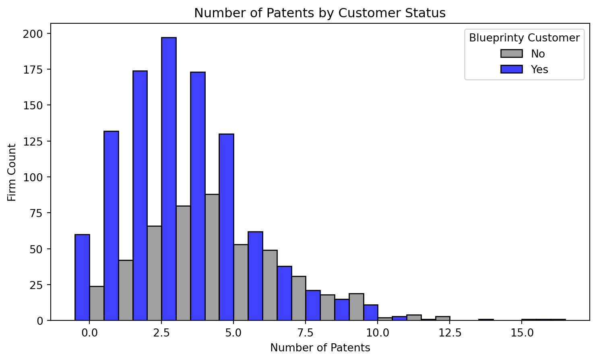
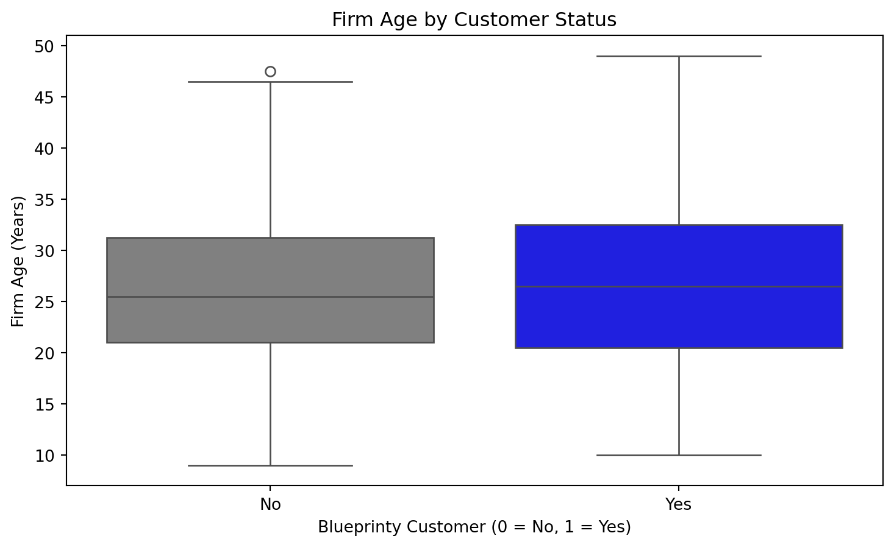
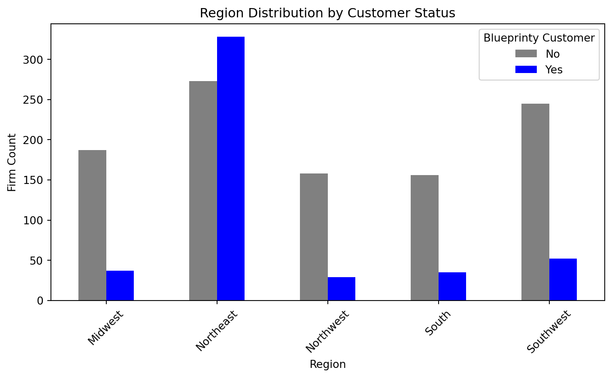
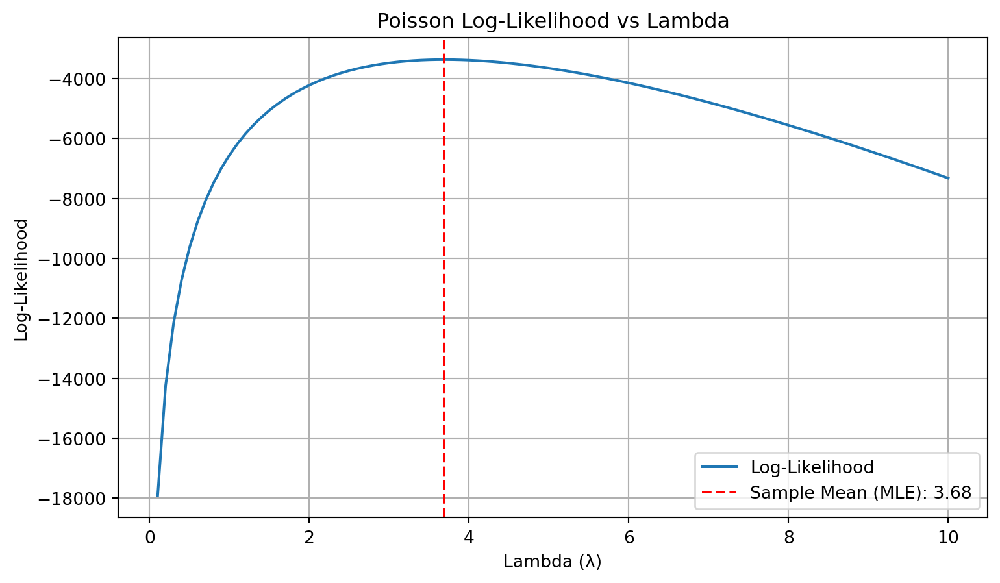
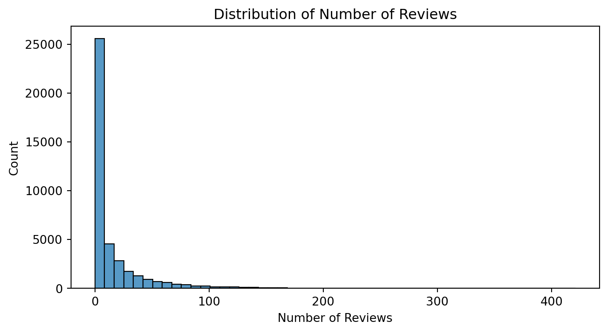
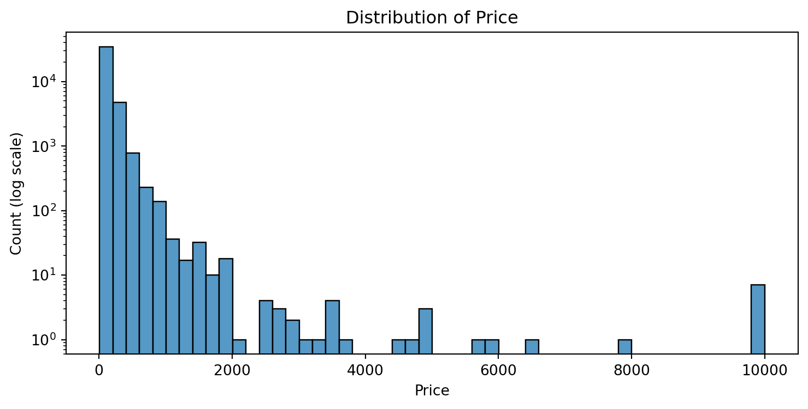
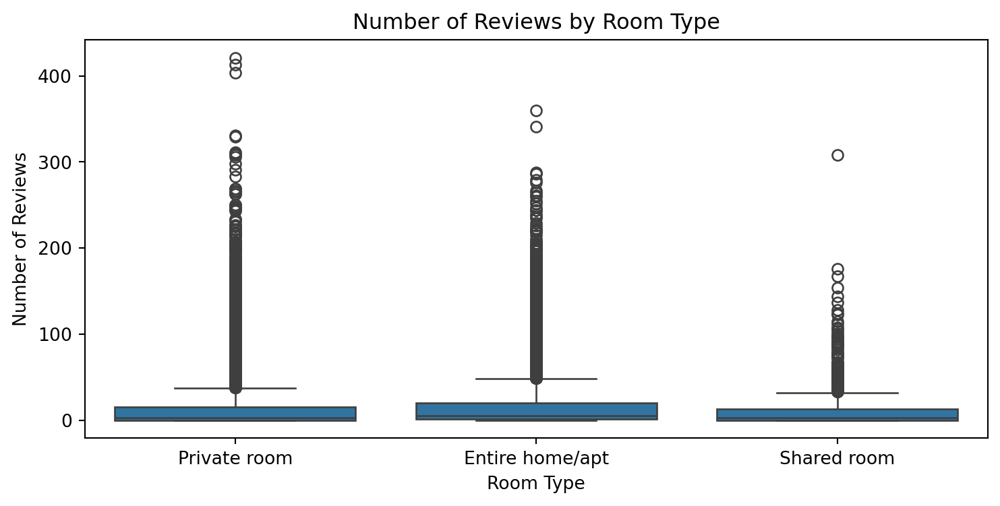

import pandas as pd
# Load Blueprinty dataset
df = pd.read_csv("blueprinty.csv")
# Preview structure
df.head()| patents | region | age | iscustomer | |
|---|---|---|---|---|
| 0 | 0 | Midwest | 32.5 | 0 |
| 1 | 3 | Southwest | 37.5 | 0 |
| 2 | 4 | Northwest | 27.0 | 1 |
| 3 | 3 | Northeast | 24.5 | 0 |
| 4 | 3 | Southwest | 37.0 | 0 |
Kush Desai
May 7, 2025
Blueprinty is a small firm that makes software for developing blueprints specifically for submitting patent applications to the US patent office. Their marketing team would like to make the claim that patent applicants using Blueprinty’s software are more successful in getting their patent applications approved. Ideal data to study such an effect might include the success rate of patent applications before using Blueprinty’s software and after using it. Unfortunately, such data is not available.
However, Blueprinty has collected data on 1,500 mature (non-startup) engineering firms. The data include each firm’s number of patents awarded over the last 5 years, regional location, age since incorporation, and whether or not the firm uses Blueprinty’s software. The marketing team would like to use this data to make the claim that firms using Blueprinty’s software are more successful in getting their patent applications approved.
import pandas as pd
# Load Blueprinty dataset
df = pd.read_csv("blueprinty.csv")
# Preview structure
df.head()| patents | region | age | iscustomer | |
|---|---|---|---|---|
| 0 | 0 | Midwest | 32.5 | 0 |
| 1 | 3 | Southwest | 37.5 | 0 |
| 2 | 4 | Northwest | 27.0 | 1 |
| 3 | 3 | Northeast | 24.5 | 0 |
| 4 | 3 | Southwest | 37.0 | 0 |
import matplotlib.pyplot as plt
import seaborn as sns
import numpy as np
# Ensure customer status is treated correctly
df['iscustomer'] = df['iscustomer'].astype(int)
# Create bins aligned with integers
max_patents = df['patents'].max()
bins = np.arange(0, max_patents + 2) - 0.5 # centers bins on integers
# Histogram
plt.figure(figsize=(9, 5))
sns.histplot(
data=df,
x='patents',
hue='iscustomer',
bins=bins,
multiple='dodge',
palette={0: 'blue', 1: 'gray'}
)
plt.title("Number of Patents by Customer Status")
plt.xlabel("Number of Patents")
plt.ylabel("Firm Count")
plt.legend(title="Blueprinty Customer", labels=["No", "Yes"])
plt.show()
# Summary statistics
df.groupby('iscustomer')['patents'].mean()
iscustomer
0 3.473013
1 4.133056
Name: patents, dtype: float64The histogram reveals that Blueprinty customers generally tend to have more patents than non-customers. While both groups are right-skewed, the distribution for customers is visibly shifted toward higher patent counts.
Summary statistics confirm this: the average number of patents for customers is 4.13, compared to 3.47 for non-customers — a meaningful difference of over half a patent on average. Additionally, customers have slightly greater variability in their patent counts, as indicated by the higher standard deviation.
However, the overlap in distributions and the presence of high-performing non-customers suggests that other variables — such as firm age or region — might also influence patent outcomes. These potential confounders should be controlled for in the regression analysis that follows.
Blueprinty customers are not selected at random. It may be important to account for systematic differences in the age and regional location of customers vs non-customers.
# Convert iscustomer to string for cleaner legends
df['iscustomer_str'] = df['iscustomer'].astype(str)
# --- Boxplot: Firm Age by Customer Status ---
plt.figure(figsize=(9, 5))
sns.boxplot(x='iscustomer_str', y='age', data=df, palette={'0': 'gray', '1': 'blue'})
plt.title("Firm Age by Customer Status")
plt.xlabel("Blueprinty Customer (0 = No, 1 = Yes)")
plt.ylabel("Firm Age (Years)")
plt.xticks([0, 1], ["No", "Yes"])
plt.show()
# --- Bar Plot: Region by Customer Status ---
region_ct = pd.crosstab(df['region'], df['iscustomer'])
# Convert crosstab to proportions or raw counts if you want stacked/dodged bar chart
region_ct.plot(kind='bar', figsize=(8, 5), color=['gray', 'blue'])
plt.title("Region Distribution by Customer Status")
plt.xlabel("Region")
plt.ylabel("Firm Count")
plt.legend(title="Blueprinty Customer", labels=["No", "Yes"])
plt.xticks(rotation=45)
plt.tight_layout()
plt.show()/tmp/ipykernel_1588605/2349405423.py:6: FutureWarning:
Passing `palette` without assigning `hue` is deprecated and will be removed in v0.14.0. Assign the `x` variable to `hue` and set `legend=False` for the same effect.


The boxplot shows that firms using Blueprinty software tend to be slightly older than non-customer firms. The median age for customers is around 26.5 years, while for non-customers it’s approximately 25.5 years. Although the difference is modest, customer firms also show a slightly wider range of ages, with a few more long-established firms. This suggests that firm age may play a role in both patenting activity and customer adoption, and should be controlled for in any regression analysis.
The bar chart of regional distribution highlights some clear imbalances in where Blueprinty customers are located. The Northeast region shows a particularly large number of customer firms, exceeding non-customers in that region. In contrast, other regions — such as the Midwest, South, and Southwest — have relatively fewer customers compared to non-customers.
This uneven regional distribution suggests that region may be a confounding factor, as both firm success (in terms of patents) and likelihood of being a customer may vary by geography. This supports the decision to include regional fixed effects or dummy variables in the regression model that follows.
Since our outcome variable of interest can only be small integer values per a set unit of time, we can use a Poisson density to model the number of patents awarded to each engineering firm over the last 5 years. We start by estimating a simple Poisson model via Maximum Likelihood.
We assume the number of patents \(Y_i\) follows a Poisson distribution:
\[ Y_i \sim \text{Poisson}(\lambda) \]
with likelihood:
\[ f(Y_i \mid \lambda) = \frac{e^{-\lambda} \lambda^{Y_i}}{Y_i!} \]
The joint likelihood for independent observations \(Y_1, \dots, Y_n\) is:
\[ L(\lambda) = \prod_{i=1}^{n} \frac{e^{-\lambda} \lambda^{Y_i}}{Y_i!} \]
Taking logs, the log-likelihood is:
\[ \ell(\lambda) = -n\lambda + \log(\lambda) \sum Y_i - \sum \log(Y_i!) \]
import pandas as pd
import matplotlib.pyplot as plt
y = df['patents'].values
# Evaluate log-likelihood across lambda range
lambdas = np.linspace(0.1, 10, 100)
log_likelihoods = [poisson_loglik(l, y) for l in lambdas]
# Plot
plt.figure(figsize=(9, 5))
plt.plot(lambdas, log_likelihoods, label='Log-Likelihood')
plt.axvline(np.mean(y), color='red', linestyle='--', label=f"Sample Mean (MLE): {np.mean(y):.2f}")
plt.xlabel("Lambda (λ)")
plt.ylabel("Log-Likelihood")
plt.title("Poisson Log-Likelihood vs Lambda")
plt.legend()
plt.grid(True)
plt.show()
The plot above shows the Poisson log-likelihood as a function of λ, the expected number of patents per firm. As expected, the log-likelihood is maximized at the point where λ equals the sample mean of the observed patent counts, approximately 3.68.
This result confirms a key theoretical property of the Poisson distribution: the maximum likelihood estimator (MLE) of λ is the sample mean of the data. The smooth, concave shape of the curve further supports the use of this likelihood for inference, as it ensures the existence of a clear global maximum. This will form the foundation for modeling count data in later sections using Poisson regression.
To find the maximum likelihood estimator (MLE) of \(\lambda\) mathematically, we begin with the Poisson log-likelihood function for \(n\) independent observations \(Y_1, Y_2, \dots, Y_n\):
\[ \ell(\lambda) = \sum_{i=1}^n \left( -\lambda + Y_i \log \lambda - \log(Y_i!) \right) = -n\lambda + \left( \sum_{i=1}^n Y_i \right) \log \lambda - \sum_{i=1}^n \log(Y_i!) \]
To maximize the log-likelihood, we take the derivative with respect to \(\lambda\):
\[ \frac{d\ell(\lambda)}{d\lambda} = -n + \frac{1}{\lambda} \sum_{i=1}^n Y_i \]
Setting this equal to zero and solving:
\[ -n + \frac{1}{\lambda} \sum Y_i = 0 \quad \Rightarrow \quad \hat{\lambda}_{\text{MLE}} = \frac{1}{n} \sum_{i=1}^n Y_i = \bar{Y} \]
This result “feels right” because the mean of a Poisson distribution is \(\lambda\), so the MLE for \(\lambda\) is simply the sample mean of the observed counts.
from scipy.optimize import minimize
# Negative log-likelihood function for optimization
def neg_loglik(lambda_):
return -poisson_loglik(lambda_[0], y)
# Optimize using scipy
result = minimize(neg_loglik, x0=[1.0], bounds=[(1e-6, None)])
lambda_mle = result.x[0]
lambda_mle3.6846667021660804We used numerical optimization to find the value of \(\lambda\) that maximizes the Poisson log-likelihood. Using scipy.optimize.minimize, we obtained an MLE of:
\[ \hat{\lambda}_{\text{MLE}} = 3.68 \]
This result exactly matches the sample mean of the observed patent counts, confirming the analytical result derived earlier. In simple models like this, the MLE aligns with known statistical properties (the mean of a Poisson distribution is \(\lambda\)). Numerical optimization becomes especially important as we move to models with predictors, where no closed-form MLE exists.
Next, we extend our simple Poisson model to a Poisson Regression Model such that \(Y_i = \text{Poisson}(\lambda_i)\) where \(\lambda_i = \exp(X_i'\beta)\). The interpretation is that the success rate of patent awards is not constant across all firms (\(\lambda\)) but rather is a function of firm characteristics \(X_i\). Specifically, we will use the covariates age, age squared, region, and whether the firm is a customer of Blueprinty.
import pandas as pd
from scipy.optimize import minimize
import numdifftools as nd
# Step 1: Feature engineering
df['age_centered'] = df['age'] - df['age'].mean()
df['age_sq'] = df['age_centered'] ** 2
region_dummies = pd.get_dummies(df['region'], prefix='region', drop_first=True)
# Step 2: Model matrix
X = pd.concat([
pd.Series(1, index=df.index, name='intercept'),
df[['age_centered', 'age_sq', 'iscustomer']],
region_dummies
], axis=1)
X_matrix = X.astype(float).values
Y = df['patents'].astype(float).values
# Step 3: Wrapper for minimize
def neg_log_likelihood(beta):
return -poisson_log_likelihood(beta, Y, X_matrix)
# Step 4: Optimization
init_beta = np.zeros(X_matrix.shape[1])
result = minimize(neg_log_likelihood, init_beta, method='BFGS')
beta_mle = result.x
# Step 5: Get standard errors using numerical Hessian
hessian_fun = nd.Hessian(neg_log_likelihood)
hessian_matrix = hessian_fun(beta_mle)
cov_matrix = np.linalg.inv(hessian_matrix)
se_beta = np.sqrt(np.diag(cov_matrix))
# Step 6: Results table
results_table = pd.DataFrame({
"Variable": X.columns,
"Coefficient": beta_mle,
"Std. Error": se_beta
})
results_table.round(4)/tmp/ipykernel_1588605/4000550630.py:7: RuntimeWarning:
overflow encountered in exp
| Variable | Coefficient | Std. Error | |
|---|---|---|---|
| 0 | intercept | 1.3447 | 0.0383 |
| 1 | age_centered | -0.0080 | 0.0021 |
| 2 | age_sq | -0.0030 | 0.0003 |
| 3 | iscustomer | 0.2076 | 0.0309 |
| 4 | region_Northeast | 0.0292 | 0.0436 |
| 5 | region_Northwest | -0.0176 | 0.0538 |
| 6 | region_South | 0.0566 | 0.0527 |
| 7 | region_Southwest | 0.0506 | 0.0472 |
import statsmodels.api as sm
# Reuse your previously constructed X_matrix and Y
glm_model = sm.GLM(Y, X_matrix, family=sm.families.Poisson()).fit()
glm_table = pd.DataFrame({
"Variable": X.columns,
"GLM Estimate": glm_model.params,
"GLM Std. Error": glm_model.bse
})
glm_table.round(4)| Variable | GLM Estimate | GLM Std. Error | |
|---|---|---|---|
| 0 | intercept | 1.3447 | 0.0384 |
| 1 | age_centered | -0.0080 | 0.0021 |
| 2 | age_sq | -0.0030 | 0.0003 |
| 3 | iscustomer | 0.2076 | 0.0309 |
| 4 | region_Northeast | 0.0292 | 0.0436 |
| 5 | region_Northwest | -0.0176 | 0.0538 |
| 6 | region_South | 0.0566 | 0.0527 |
| 7 | region_Southwest | 0.0506 | 0.0472 |
The results from our custom MLE implementation and the built-in statsmodels.GLM() function match closely, both in coefficient estimates and standard errors. This confirms that our manually coded log-likelihood function and optimization steps are functioning correctly.
The coefficient for iscustomer is 0.2076, with a standard error of 0.0309, indicating a statistically significant positive effect of using Blueprinty’s software on the number of patents awarded. Interpreted in the context of a Poisson model, this suggests that being a customer is associated with a multiplicative increase in expected patent count of:
\[ \exp(0.2076) \approx 1.23 \]
This means Blueprinty customers are expected to receive approximately 23% more patents than similar non-customers, after adjusting for age and region.
Other coefficients behave as expected: - The negative sign on age_centered and age_sq indicates a concave (inverted U-shape) relationship between firm age and patent output. - Regional effects vary but are generally modest and statistically insignificant based on their standard errors.
# Step 1: Create counterfactual feature matrices
X_0 = X.copy()
X_1 = X.copy()
X_0['iscustomer'] = 0
X_1['iscustomer'] = 1
# Step 2: Convert to NumPy
X_0_matrix = X_0.values.astype(float)
X_1_matrix = X_1.values.astype(float)
# Step 3: Predict using your estimated beta_mle
y_pred_0 = np.exp(X_0_matrix @ beta_mle)
y_pred_1 = np.exp(X_1_matrix @ beta_mle)
# Step 4: Compute average treatment effect
ate = np.mean(y_pred_1 - y_pred_0)
ate0.7927686552064472To assess the causal effect of Blueprinty’s software, we simulated two counterfactual scenarios for each firm: - X₀: if no firm were a customer (iscustomer = 0) - X₁: if every firm were a customer (iscustomer = 1)
Using the MLE estimates from our Poisson regression model, we predicted patent counts under both conditions and computed the difference for each firm. The average of these differences gives us the average treatment effect (ATE) of the software.
The estimated ATE is:
\[ \text{ATE} = 0.79 \]
This implies that, on average, firms using Blueprinty’s software are expected to produce 0.79 more patents than similar non-customers, after adjusting for firm age and regional location. This provides meaningful evidence that Blueprinty’s software may positively impact patenting success.
AirBnB is a popular platform for booking short-term rentals. In March 2017, students Annika Awad, Evan Lebo, and Anna Linden scraped of 40,000 Airbnb listings from New York City. The data include the following variables:
- `id` = unique ID number for each unit
- `last_scraped` = date when information scraped
- `host_since` = date when host first listed the unit on Airbnb
- `days` = `last_scraped` - `host_since` = number of days the unit has been listed
- `room_type` = Entire home/apt., Private room, or Shared room
- `bathrooms` = number of bathrooms
- `bedrooms` = number of bedrooms
- `price` = price per night (dollars)
- `number_of_reviews` = number of reviews for the unit on Airbnb
- `review_scores_cleanliness` = a cleanliness score from reviews (1-10)
- `review_scores_location` = a "quality of location" score from reviews (1-10)
- `review_scores_value` = a "quality of value" score from reviews (1-10)
- `instant_bookable` = "t" if instantly bookable, "f" if notimport matplotlib.pyplot as plt
import seaborn as sns
df = pd.read_csv("airbnb.csv")
# Histogram: number of reviews
plt.figure(figsize=(8,4))
sns.histplot(df["number_of_reviews"], bins=50, kde=False)
plt.title("Distribution of Number of Reviews")
plt.xlabel("Number of Reviews")
plt.ylabel("Count")
plt.show()
# Histogram: price (log scale)
plt.figure(figsize=(9,4))
sns.histplot(df["price"], bins=50, kde=False)
plt.yscale("log")
plt.title("Distribution of Price")
plt.xlabel("Price")
plt.ylabel("Count (log scale)")
plt.show()
# Boxplot: reviews vs. room type
plt.figure(figsize=(9,4))
sns.boxplot(x="room_type", y="number_of_reviews", data=df)
plt.title("Number of Reviews by Room Type")
plt.xlabel("Room Type")
plt.ylabel("Number of Reviews")
plt.show()
# Correlation matrix
print("Correlation Matrix:")
print(df[["number_of_reviews", "price", "bedrooms", "bathrooms", "review_scores_cleanliness"]].corr().round(2))


Correlation Matrix:
number_of_reviews price bedrooms bathrooms \
number_of_reviews 1.00 -0.01 0.02 -0.02
price -0.01 1.00 0.28 0.25
bedrooms 0.02 0.28 1.00 0.41
bathrooms -0.02 0.25 0.41 1.00
review_scores_cleanliness 0.03 0.03 0.00 0.00
review_scores_cleanliness
number_of_reviews 0.03
price 0.03
bedrooms 0.00
bathrooms 0.00
review_scores_cleanliness 1.00 To understand the distribution of Airbnb listings and support variable selection for our Poisson regression, we explored key features using histograms, boxplots, and correlations.
number_of_reviews is highly right-skewed, with most listings receiving fewer than 20 reviews and a few receiving over 400. This supports using Poisson regression for count data.price is also heavily skewed, with a long right tail. We applied a log transformation in the model to reduce its leverage.number_of_reviews and other numeric predictors (price, bedrooms, bathrooms, and review_scores_cleanliness), indicating that multiple features may contribute modestly to review counts.instant_bookable is a binary feature that is included as a potential convenience factor influencing bookings (and hence reviews).These insights helped guide our modeling choices. Based on the EDA, we retained features such as log(price), bedrooms, bathrooms, review_scores_cleanliness, room_type, and instant_bookable in our regression model.
import pandas as pd
import numpy as np
import statsmodels.api as sm
# Select variables from EDA
cols = [
"number_of_reviews", "price", "bedrooms", "bathrooms",
"review_scores_cleanliness", "room_type", "instant_bookable"
]
df = df[cols].dropna()
# Feature transformation
df["log_price"] = np.log1p(df["price"])
df["instant_bookable"] = df["instant_bookable"].map({"t": 1, "f": 0})
# Room type dummies
room_dummies = pd.get_dummies(df["room_type"], prefix="room", drop_first=True)
# Final model matrix
X = pd.concat([
df[["log_price", "bedrooms", "bathrooms", "review_scores_cleanliness", "instant_bookable"]],
room_dummies
], axis=1)
X = sm.add_constant(X).astype(float)
y = df["number_of_reviews"].astype(float)
# Fit Poisson regression
model = sm.GLM(y, X, family=sm.families.Poisson())
results = model.fit()
# Show summary
results.summary()| Dep. Variable: | number_of_reviews | No. Observations: | 30247 |
| Model: | GLM | Df Residuals: | 30239 |
| Model Family: | Poisson | Df Model: | 7 |
| Link Function: | Log | Scale: | 1.0000 |
| Method: | IRLS | Log-Likelihood: | -5.3354e+05 |
| Date: | Wed, 07 May 2025 | Deviance: | 9.4543e+05 |
| Time: | 18:31:00 | Pearson chi2: | 1.43e+06 |
| No. Iterations: | 5 | Pseudo R-squ. (CS): | 0.4677 |
| Covariance Type: | nonrobust |
| coef | std err | z | P>|z| | [0.025 | 0.975] | |
| const | 2.1733 | 0.017 | 126.677 | 0.000 | 2.140 | 2.207 |
| log_price | 0.0976 | 0.003 | 34.708 | 0.000 | 0.092 | 0.103 |
| bedrooms | 0.0642 | 0.002 | 31.775 | 0.000 | 0.060 | 0.068 |
| bathrooms | -0.1478 | 0.004 | -39.498 | 0.000 | -0.155 | -0.140 |
| review_scores_cleanliness | 0.0433 | 0.001 | 36.337 | 0.000 | 0.041 | 0.046 |
| instant_bookable | 0.3521 | 0.003 | 121.944 | 0.000 | 0.346 | 0.358 |
| room_Private room | 0.0671 | 0.003 | 19.907 | 0.000 | 0.060 | 0.074 |
| room_Shared room | -0.1265 | 0.009 | -13.921 | 0.000 | -0.144 | -0.109 |
We fit a Poisson regression to model the number of reviews an Airbnb listing receives as a proxy for bookings. The predictors were selected based on exploratory analysis and include price (log-transformed), listing features (bedrooms, bathrooms), review cleanliness scores, booking convenience (instant_bookable), and room type dummies.
Key takeaways:
log_price (β = 0.0976): Listings with higher nightly prices are associated with more reviews. Since this is log-transformed, it suggests that each 1% increase in price is associated with roughly a 0.1% increase in expected reviews, holding other features constant.bedrooms (β = 0.0642): More bedrooms are positively associated with reviews — likely reflecting larger accommodations attracting more guests.bathrooms (β = -0.1478): Interestingly, additional bathrooms are associated with fewer reviews, possibly reflecting a confounding factor (e.g., luxury listings in low-demand areas).review_scores_cleanliness (β = 0.0433): Higher cleanliness ratings are strongly and significantly associated with more reviews.instant_bookable (β = 0.3521): Listings that are instantly bookable tend to receive ~42% more reviews on average, since \(\exp(0.3521) ≈ 1.42\). This highlights how convenience affects demand.room_type dummies: Compared to the baseline (Entire home/apt):
Overall, the model suggests that convenience (instant bookable), cleanliness, price, and layout all significantly affect how frequently a listing is booked and reviewed.